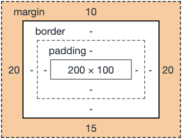
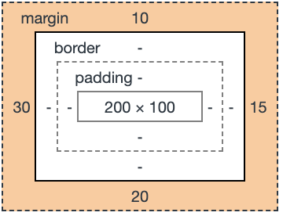

Организационные моменты
😉 Леонид Феськов
🔇 Отключите микрофоны
❓ Вопросы можно задавать сразу по ходу лекции
🔉 Не забывайте включать микрофон, когда задаете вопрос
План
- CSS-свойства
- Адаптивная верстка
- CSS-препроцессоры
Блочная модель

Короткая запись margin, padding
Короткая запись margin, padding
Короткая запись margin, padding
margin: 10px 20px 15px;

Короткая запись margin, padding
margin: 10px 15px 20px 30px;

Position
- static (по умолчанию)
- relative
- absolute
- fixed
- sticky
Z-index

Z-index

Flexbox

Media queries
– CSS правила, которые позволяют применять разные CSS-стили, для разных устройств по типу отображения (например: для принтера или монитора), или для конкретных характеристик устройства (например: ширины окна просмотра, ориентация устройства)
@media screen and (max-width: 480px) {
.block {
background-color: #2196f3;
color: #fff;
}
...
}
Пример адаптивной верстки
 hh.ru
hh.ru
Breakpoints

Viewport
<meta name="viewport" content="width=device-width, initial-scale=1">
Реализация даптивной верстки
.header {
...
}
.promo-carousel {
...
}
Реализация даптивной верстки
@media (min-width: 480px){
.header {
...
}
.promo-carousel {
...
}
}
Реализация даптивной верстки

@media (min-width: 1000px) { ... }
Проблемы CSS
- CSS импорты медленные
- Нет переменных (уже есть)
- Нет функций
- На CSS нельзя программировать
CSS-препроцессор
– это надстройка над CSS, которая добавляет ранее недоступные возможности для CSS, с помощью новых синтаксических конструкций.
Как это работает

➡️

Использование less
-
<link rel="stylesheet/less" type="text/css" href="styles.less" />
<script src="//cdn.jsdelivr.net/npm/less" ></script>
-
npm install -g less
lessc styles.less styles.css
-
настроить компиляцию less в webpack, gulp, parcel или др.
Рекомендации по CSS
- Придерживайтесь стайлгайда (например Google CSS Style Guide)
- Используйте селекторы классов
- Именуйте классы по смыслу, а не по значению
- Не повышайте специфичность селекторов без надобности
- Старайтесь не использовать непонятные сокращения
- Учитывайте переполнение/недополнение контентом
- Не пишите лишние свойства